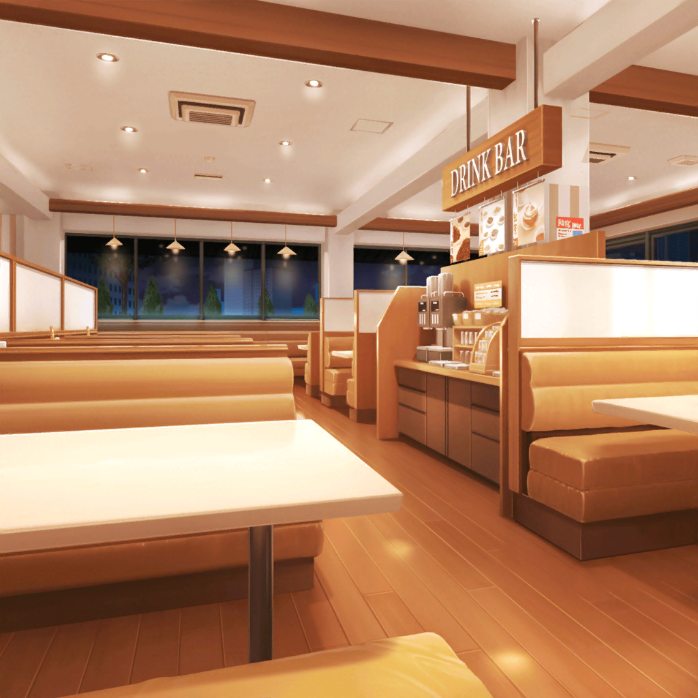

ファミレス
あこ
はぁ～、美味しかった～！
お腹いっぱいだねー、りんりん
燐子
う、うん……あ……
あこちゃん……
ほっぺたに……ごはん粒、ついてるよ……
あこ
どこ？ こっち？ あれ？
ねぇ、りんりん取って～
紗夜
あの、そろそろ反省会を始めませんか？
燐子
あ……！
そ、そうですね……！
リサ
うん、そうしよっか！
けどさ、ここのメニューってホントにハズレがないよね！
アタシも大満足って感じ
友希那
リサ、あなたまで……
みんなわかってるかしら？
これは、あくまでも今日のライブの反省会よ
あこ
はーい、わかってまーすっ！
あ、その前に友希那さん！
ちょっとドリンクバー行ってきていいですか？
リサ
それじゃあ、アタシも。
友希那、コーヒー持ってきてあげようか？ 砂糖多めだよね？
店長
あの、ちょっとすみません。
みなさん、今ちょっとお時間よろしいでしょうか？
リサ
はい？ アタシ達？
えっと……確か、このお店の店長さんでしたよね？
なんか用ですか？
店長
実はですね、今、お店で新しいメニューを
開発してるんですが、それをお客様にご試食いただいて、
ご意見をもらいたいな、と思いまして……
あこ
試食！？
やったー！ あこ、食べたーい！
みんなも食べたいよね？
燐子
わ、わたしは……ちょっと……
あこ
大丈夫、だいじょーぶ！
試食は別腹だって！
リサ姉も食べたいでしょ？
リサ
確かに、新しいメニューって言われちゃうと
ちょっと惹かれるよね〜
友希那
だけど、どうして私達なのかしら？
もっと他にもたくさんお客さんいるけれど……
リサ
まー、いいじゃん！
せっかく声かけてくれたんだからさ！
それじゃあ、店長さん、お願いします！
店長
はい、ありがとうございます！
それでは、今お持ちしますので、しばらくお待ち下さい！
５分後
店長
それでは、こちらになります。
ぜひご試食ください！
あこ
わ～～～っ！
なんかすっごいたくさん運ばれてきたよ～！
リサ
ホントだっ！
こんなに食べられるかな～？
友希那
この料理は……グラタンかしら？
店長
こちらはフライドポテトを使ったグラタンです。
こっちはフライドポテトを使ったオムレツ、
で、これがフライドポテトにチョコソースをかけたデザートです
リサ
わ……見事にフライドポテトばっかり……
燐子
氷川さん……さっき……ポテト、食べたばっかりなのに……
あこ
紗夜さん、よかったですねっ！
またフライドポテト来ましたよ！
紗夜
だ、だから、私は……
フライドポテトが特別、大好きというわけでは……
店長
あの、どうしてもお客さまのご意見が聞きたいと思いまして。
１人でご来店いただいた時も、必ずフライドポテトを
ご注文いただいてますからね！
あこ
え！？ そうだったんですかっ！？
紗夜さん、今の本当ですか？
燐子
氷川さん……ポテト、そこまでお好きだったんですね……
紗夜
い、いえ、それは……
リサ
（こ、これは助け舟を出しとかないと……だよね？）
リサ
も、もしかしたら、店長さん、
ヒナと勘違いしてるのかもね……っ！
あこ
あ！ そっか！
紗夜さんとひなちんってそっくりだもんね！
友希那
そう？ 言うほど似てるかしら？
私には、似ているように見えないけれど
燐子
……けど、それはわたし達だから……かもしれませんね。
他の人が見たら……やっぱり似てると、思います……
リサ
ま、まあね、理由はわからないけど！
せっかく試食させてくれるんだからさ！
さ、さあ食べよー……っ！ いただきまーす！
１０分後
店長
お味の方は、いかがでした？
あこ
すっごく美味しかったです！！
あこはグラタンが１番好きかも。
アツアツのチーズがサイコーでしたっ！
燐子
わたしも、グラタン……が……よかった、です
リサ
アタシは断然オムレツだな～☆
口の中で、いろんな食感が楽しめてすっごく美味しかったです！
友希那はどうだった？
友希那
私は、フライドポテトとチョコソースが
意外と合うのに驚いたわ。
紗夜も気に入ったみたいね？
紗夜
はい。どの料理もとても美味しかったです。
それぞれ違ったフライドポテトの美味しさを
満喫することができました
店長
みなさん、貴重なご意見ありがとうございます！
十分参考にさせていただきます！
リサ
あはは！ 力になれてよかったですっ！
この料理がメニューに載る日も近いかもね、あこ！
燐子
あこちゃん……たのしみだね……
あこ
うんっ！ 正式にメニューになったらあこ、
絶対注文しますっ！
店長
ホントですか！？
あの実は……
もう１つ試食していただきたい料理がありまして……
リサ
ま、まだあるんだ！？
店長
ゴーヤを使った試作品なんですが――
友希那
すみません、お断りします
店長
い、いえ、これがかなりの自信作でして――
友希那
さ、先程の試食で、お腹いっぱいになってしまったので……
すみませんが……
あこ
あこはまだ食べられますっ！
リサ
ま、まあ……アタシ達、試食しにここに来たわけじゃないし！
そろそろ反省会やらないとだからさ。ね？
あこ
そっか。そうだよね！ 店長さん、すみません
友希那
（よかった……リサ、助かったわ……）
リサ
（まったく。紗夜も友希那も、世話が焼けるんだから……）